01.07.2019
Відновлюється показ на телекАНАЛІ "Ґ+Ґ" пропаганди "руського міра" в серіалі "Свати" за участі московських акторів, що визнали анексію Криму.
Зеленський знову починає отримувати гроші від співпраці з країною-агресором.
Богдан пропонує повернути регіональні мови в Україні »»»
02.07.2019
Справу проти екс-«регіонала» Іванющенка закрили, його зняли з розшуку »»»
03.07.2019
Зеленський в Канаді. Дивувався цінам, просив гроші... »»»
UPD: ...а сам в цей же час витрачав мільйони державних коштів »»»
UPD: ...перетворив виступ на конференції щодо реформи в Україні у стендап-шоу »»»
UPD: ...хамив своїм фоловерам »»»
UPD: ...і, не повірите, хвалився досягненнями ... "злочинної влади бариг і мародерів, які розікрали всю країну і довели народ до жахливого зубожіння"
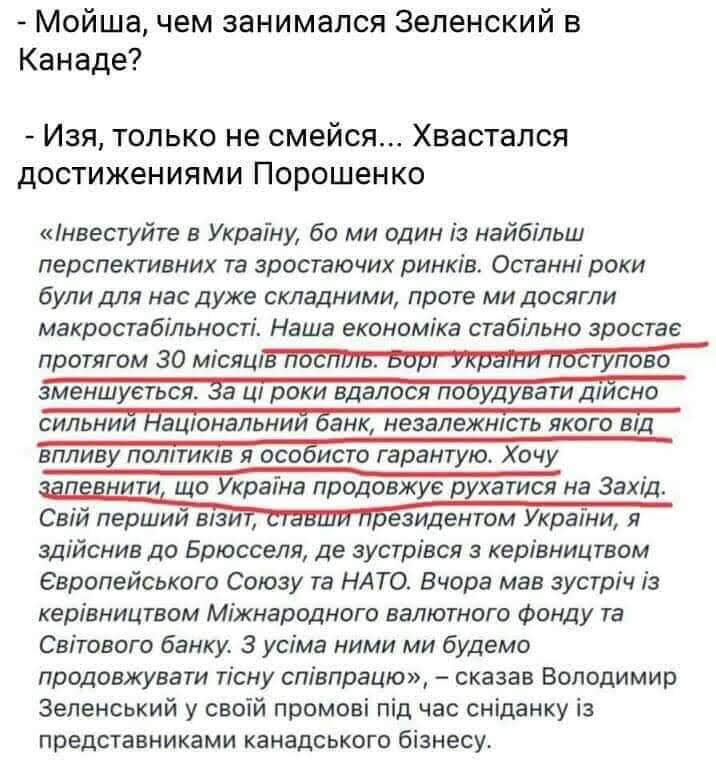
Зе-команда для агітації використовує неповнолітніх »»»
04.07.2019
"Морально поддерживаю": Коломойський повідомив, що інколи спілкується з Зеленським по телефону »»»
UPD: Стислий переказ інтерв'ю Коломойського виданню "Новое время" »»»
Представники "Національних дружин "напали на активістів "Європейської Солідарності", які під будівлею Конституційного Суду мітингують проти скасування люстрації »»»
UPD: Представники "Національного корпусу" топтали прапор України та напали на активістку "Європейської солідарності" Дінару Габібуллаєву »»»
Новим заступником Генпрокурора призначений Сергій Кізь - протеже Андрія Богдана. Кізь керував підрозділом, який вів провадження, пов'язані з "Приватом". Кандидатуру нового заступника узгоджували в Офісі Президента »»»
Кум Медведчука идет в Раду от "Слуги народа" »»»
UPD: Партія “Слуга народу” відмовилася виключати зі списку кума Медведчука »»»
У Зеленського відмовилися повідомити, хто веде переговори щодо газу з Росією. Така відмова є грубим порушенням Закону "Про доступ до публічної інформації" »»»
Большинство указов президента Владимира Зеленского изданы с грубыми нарушениями норм действующего законодательства »»»
05.07.2019
Зеленський призначив на посаду очільника Донецької ОДА силовика, брат якого воює за бойовиків »»»
Очільником Луганської ОДА призначено українофоба та екс-регіонала Віталія Комарницького »»»
Пресслужба Зеленського зганьбилася через столицю Канади »»»
06.07.2019
Очільником Закарпатської ОДА призначено підприємця-кондитера І.Бондаренка. Ера "шоколадних бариг" продовжується? ☺ »»»
За червень 2019 року секретар Ради національної безпеки та оборони Олександр Данилюк отримав зарплату у розмірі 92 тисяч 320 гривень. Це сума з усіма надбавками »»»
UPD: Зарплата нового секретаря РНБО Данилюка удвічі вища, ніж була в Турчинова »»»
"Я ничего не могу сделать" - Зеленський о "Северном потоке - 2" »»»
Що тут скажеш? Істинний лідер! :(
UPD: Після побудови "Північного потоку-2" на Україну поїдуть російські танки »»»
"У нас буде своя прокуратура" - Зеленський на зустрічі з митниками »»»
А отут, що називається "вірю"! І саджати ця "своя" прокуратура буде тих, кого треба... :(
07.07.2019
"Или с бодуна, или после кайфа": Зеленский удивил странным поведением во время совещания »»»
Команда Зеленського влаштувала в Бабиному Яру, в місці, де в роки Другої світової війни були розстріляні сотні тисяч людей, розважальний політичний тренінг з веселою музикою »»»
08.07.2019
Зеленський пропонує спростити процедуру виплати пенсій та соціальних пільг жителям ОРДЛО та спростити порядок провезення товарів »»»
Покушение на госизмену. Телемост NewsOne с Россией »»»
Зеленський знову "на фронті". Головнокомандуючий, як і треба - в траншеї, дерев'яні стінки траншеї чистенько вимиті, сходинки зацементовані (як у справжніх траншеях - еге ж!), а от за ним по брустверу на виду у ворога ходить натовп журналістів з камерами і діти з морозивом. От такий "фронт".
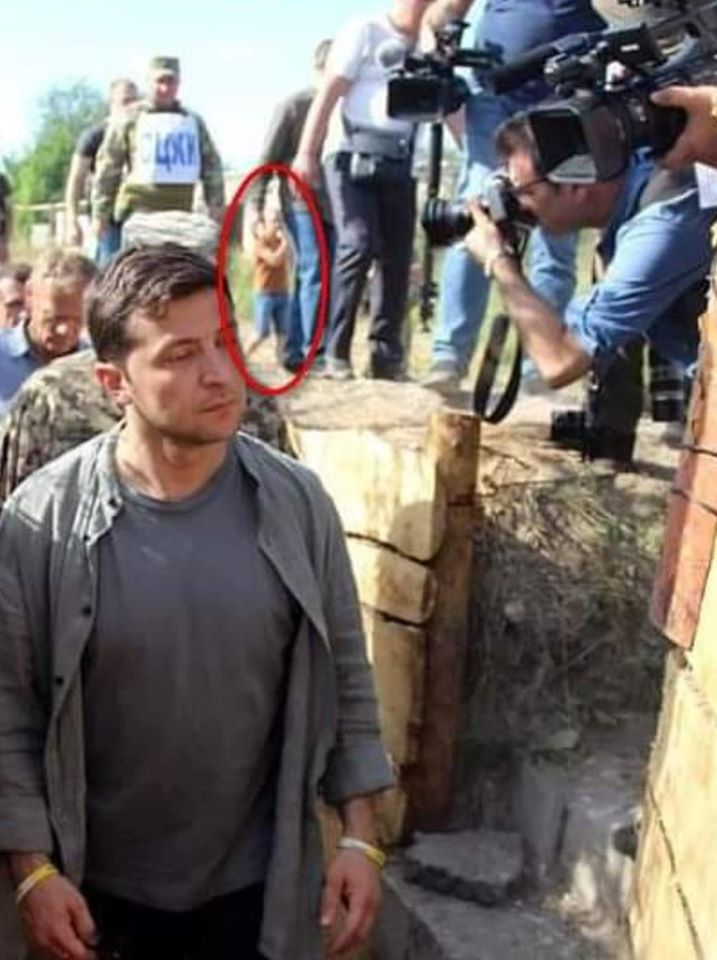
Виникає питання: чи то Зеленський для російських окупантів свій, що вони в нього, незважаючи на його кричуще демаскування (уже вдруге!) не стріляють, чи то й не був він ні на якому фронті, а то так - знімальний майданчик студії "95 квартал".
09.07.2019
Зеленський хоче дозволити Донбасу використовувати російську мову »»»
Зеленський веде до влади контрабандну мафію »»»
Зеленский назначил главой Нацсовета по вопросам телевидения и радиовещания владельца автосервиса »»»
В Офісі президента пропонують відмовитися від заборони екпортувати ліс »»»
Зеленський скасував парад на День Незалежності. Кошти від параду планується виділити на премії військовослужбовцям, які перебувають на Донбасі. »»»
UPD: П'ятий президент України П.Порошенко назвав це рішення можливим але недалекоглядним, оскільки парад - це можливість віддати шану й повагу народом своїй армії »»»
UPD: Ветерани АТО самі організовують військовий марш у Києві замість скасованого »»»
UPD: Заявления главы государства о параде и его стоимости - обычная ложь - Омелян »»»
Роботу з інтеграції до ЄС і НАТО поставлено на паузу, - Климпуш-Цинцадзе »»»
10.07.2019
Зеленський нахамив і вигнав з засідання секретаря Бориспільської міськради »»»
UPD: Зеленський у Борисполі продемонстрував поведінку, запозичену з часів Російської імперії - Таран »»»
Це частина "руского міра" яка називається "цар - хороший, бояри - погані"
Никакого кумовства: Зеленский назначил одногруппника Разумкова главой Киевской области »»»
На в'їзді в Гранітне біля блокпоста під обстріл потрапив автомобіль КРАЗ із військовими на борту. В одному з автомобілів перебував новопризначений Голова Донецької ОВЦА П.Кириленко »»»
UPD: У штабі ООС підтвердили самовільний виїзд Глави Донецької ОблВЦА на передову »»»
11.07.2019
Ганебні часи: 50 днів Зеленського – 50 поразок України »»»
Апеляційний суд визнав законним скасування розшуку і заочного арешту Шарія »»»
Зеленський дав генералу часів Януковича високу посаду у Службі зовнішньої розвідки »»»
"Не велик, а "Гелік": VIP-кортеж Зеленського влаштував колапс у Києві, українці обурені »»»
UPD: В Киеве автомобилисты устроили "дорогу позора" VIP-кортежу Зе-била »»»
Зеленський пропонує здійснити додаткову люстрацію. Під неї підпадають усі, хто обіймав державні посади в 2014-2019 роках. »»»
Судячи з усього, ідея додаткової люстрації належить Андрію Портнову, а Зеленський - лише її реалізатор. Портнов у команді Зеленського, чи Зеленський у команді Портнова?
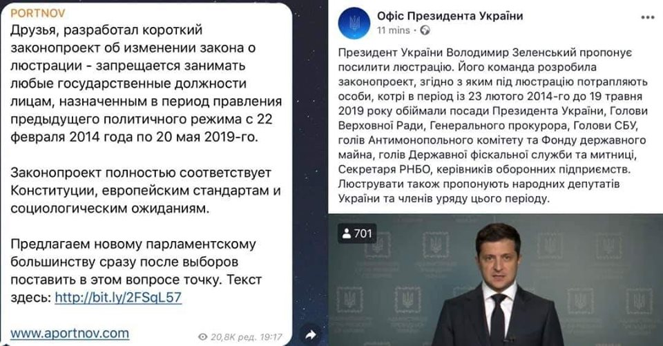
UPD1: Люстраційний список Зеленського дивним чином збігається з тим, проти кого Кремль ввів санкції »»»
UPD2: Розширенням люстрації Володимир Зеленський виконує пряме побажання президента Росії Володимира Путіна »»»
"Повернення методів Януковича": Кличко повідомив, що Зеленський планує призначити головою КМДА свою людину »»»
Проти спікера ВР А.Парубія з ініціативи Портнова заведена кримінальна справа за звинуваченням у державній зраді »»»
ДБР проводить слідчі дії в офісі Зеленського »»»
Cлідчих цікавлять тільки наради, накази і документи під грифом "цілком таємно" та пов'язані з інформацією, що містить державну таємницю. Є підозра, що ця інформація може збиратися в інтересах Російської Федерації.
«Схеми» показали, як в Окружному адмінсуді Києва обходять систему авторозподілу справ між суддями »»»
12.07.2019
У Раді зареєстровано законопроект Зеленського про очищення влади »»»
UPD1: Посли країн G7 розкритикували ідеї Зеленського про нову люстрацію »»»
UPD2: Подпадают даже создатели ракет: всплыл скандальный нюанс с люстрацией Зеленского »»»
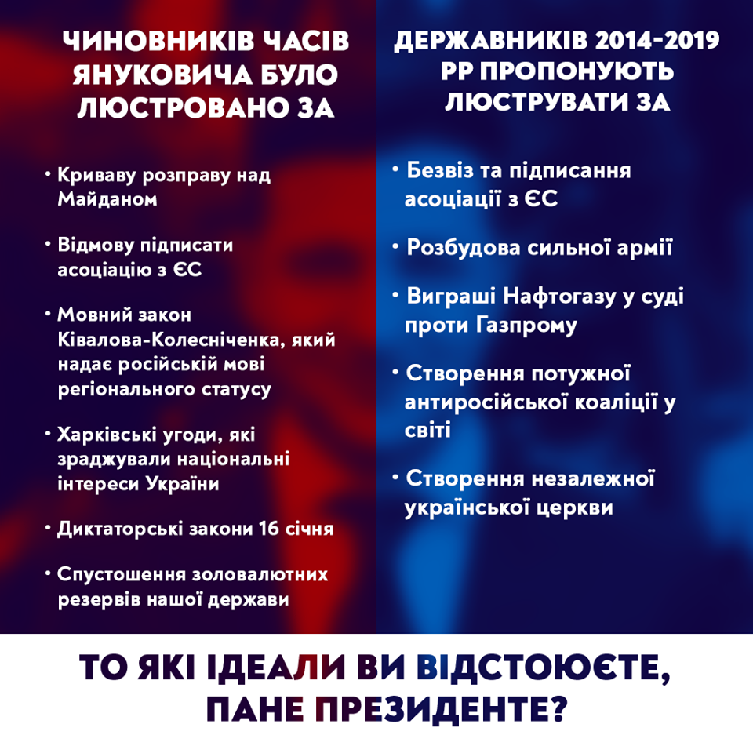
Зеленський дав високу посаду подрузі Олени Кравець »»»
Шостий апеляційний адміністративний суд скасував постанову ЦВК про відмову в реєстрації прокурора Рената Кузьміна як кандидата в народні депутати на парламентських виборах 2019 року »»»
Біля Одеси ліквідовано стратегічний військовий аеродром »»»
«Зеленський втілюється в Лукашенку». Польська преса пише про "білорусизацію України" Зеленським »»»
Зеленський є продовженням команди Януковича та уособленням Антимайдану - Бригинець »»»
13.07.2019
Команда Зеленского назначила "смотрящего" за Киевом »»»
“Помруть дельфіни”: екологи шоковані рішенням Зеленського заборонити перевірку суден в порту Одеси »»»
Це означає, що в Чорне море тепер можна зливати все, що завгодно. Це той момент, якого всі боялись: коли некомпетентність президента і бажання легких рішень може мати серйозні негативні наслідки »»»
У Миколаєві кандидат від “Слуги народу” змушує дітей розклеювати свою агітацію »»»
Кровавое миротворчество. Армия уже расплачивается за популизм и некомпетентность зекоманды »»»
Наполягаючи на звільненні т.в.о Начальника ДФС Зеленський знову, вже у 28-й раз, грубо порушив чинне законодавство »»»
Схоже, головною "фішечкою" зе-команди стає цілковите ігнорування будь-яких законів держави. Країна впевнено рухається до правового хаосу й життя "за понятіями"
Во время визита преЗЕдента на Южмаш чиновник завода отвернулся от Зеленского и отчитывается перед жующим жвачку Богданом. Теперь вы знаете кто настоящий президент. Спасибо всем кто голосовал по-приколу »»»
Протизаконний маєток родини «Слуги народу» Разумкова на березі Матвіївського розливу »»»
Так он воно звідки таке люте бажання ввести ринок землі! Латифундист Разумков прагне узаконити за собою роздерибанену під час хаосу олігархівського керування країною землю!
14.07.2019
У Черкасах кандидатка від «Слуги народу» списала виборчу програму в журналіста 1+1 »»»
Партія “Слуга народу” “наїхала” на український фестиваль Made in Ukraine через те, що він нібито завадив їхній політичній силі провести агітаційний концерт у Києві »»»
Російська пропагандистка Ольга Скабєєва підтримала рішення президента України Володимира Зеленського облаштувати КПВВ на адмінкордоні з окупованим Кримом »»»
Лідер партії "Слуга народу" Дмитро Разумков вважає, що питання декомунізації повинні вирішуватися на місцевих референдумах »»»
Портнов пообещал, что он с Зеленским начнет «массовые аресты порохоботов» »»»
Шостий президент країни світить червоними труселями в Одесі »»»
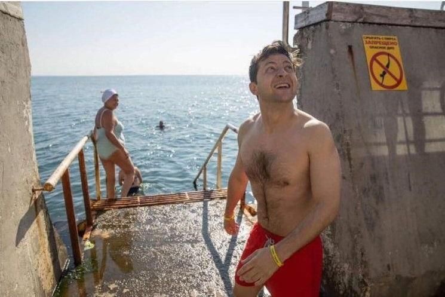
Под Запорожьем авто из кортежа Зеленского подрезали автобус с детьми: тот слетел в кювет »»»
UPD1: "Президент міг хоча б записати ролик із вибаченнями" - Омелян »»»
UPD2: Ни дня без лжи... Зеленский опять заврался »»»
15.07.2019
“Тендери для своїх”: Зеленський взявся знищувати систему ProZorro »»»
Суд Лондона наклав арешт на майно Бєні по всьому світу. Суд Києва зняв арешт майна Бєні по всій Україні. Печерський райсуд зняв арешт з нерухомості Коломойського »»»
UPD: Україна виплатить нафтогазовій компанії Коломойського 12,5 мільйона доларів »»»
Глава ДБР не заперечує можливості переслідування добровольців, які захищали Україну »»»
Сплив скандальний зв'язок між Вишинським і Разумковим »»»
В Україні відзначатимуть 28-му річницю Незалежності покладанням квітів та урочистими заходами, проте без проведення військового параду. Про це йдеться в указі президента №513/2019 »»»
UPD: Парад – учителі, лікарі і попереду президент Зеленський – нагадує минуле століття »»»
Суд отменил ликвидацию банка «Юнисон» Александра Клименко »»»
16.07.2019
Зеленский — офшорник: студия «Квартал-95» зарегистрирована на Кипре »»»
Ще одне "нове обличчя"! Зеленський призначив ексспікера ВРУ Володимира Литвина постпредом України в ЄС »»»
В ВСУ внезапно начались сокращения и чистки - Ю.Бирюков »»»
Зеленський записав відео за кермом автомобіля з логотипом електромобіля Tesla та закликав українців не голосувати за шахраїв »»»
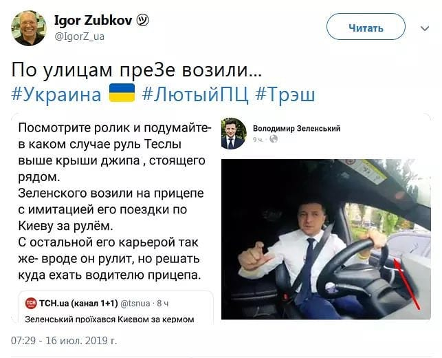
UPD: Зеленський заявив, що не має повноважень когось посадити
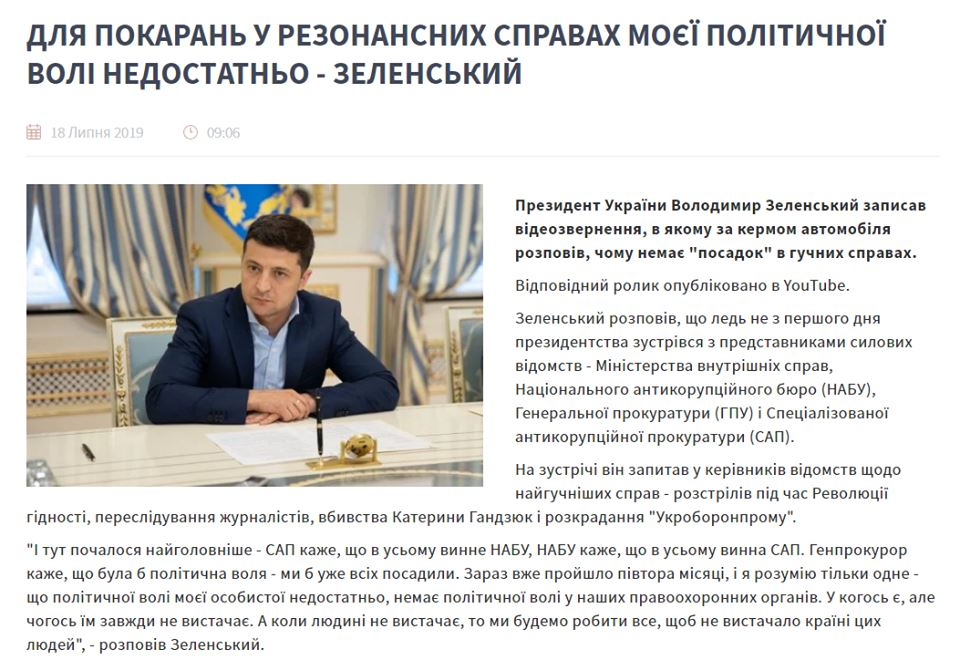
17.07.2019
В ОПУ состоялась тайная встреча: Зеленский готовит ликвидацию независимости НАПК »»»
Журналісти повідомили про погрози від імені Зеленського: які питання просять не ставити президенту »»»
Дешевий популізм перед виборами: Зеленський пропонує на 90 днів відкласти штрафи для євробляхерів »»»
Одіозні кандидати у ВР від "Слуги народу":
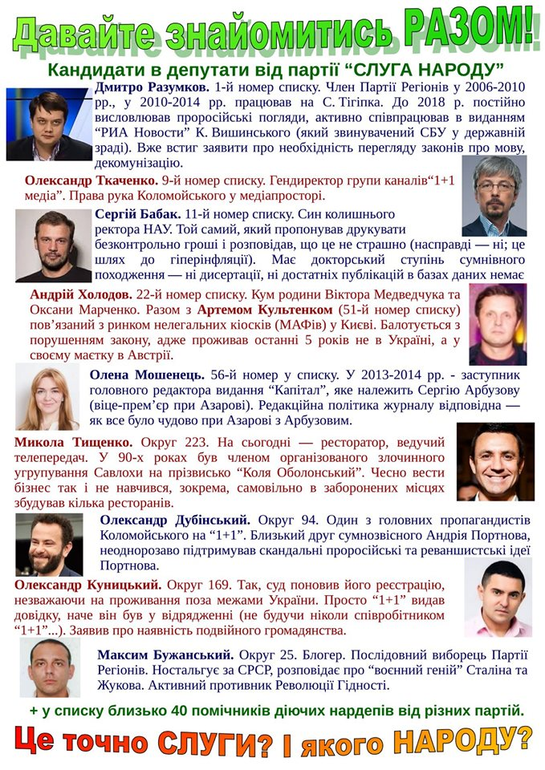
Зеленський вимагає скликання позачергового засідання Верховної Ради »»»
UPD1: Парубій відмовив Зеленському в скликанні позачергового засідання »»»
Скликати ЗАСІДАННЯ вже не можна, оскільки закрито СЕСІЮ. Потрібно скликати позачергову СЕСІЮ. Для цього Зеленський повинен усього лише подати до ВР документ з правильним формулюванням
UPD2: “Відкрию Вам очі”: Зеленський написав Парубію листа з вимогою зібрати засідання ВР »»»
UPD3: Парубій – Зеленському: Шановний пане Президенте! Вчора я ввічливо попросив Вас виправити помилку... »»»
UPD4: "Большой ему привет": Зеленский объявил бойкот Парубию »»»
UPD5: «Рада – це не «Квартал» і не КВН»: Парубій різко відповів Зеленському »»»
Зеленський знову порушив закон. На цей раз Закон "Про забезпечення функціонування української мови як державної". Всупереч Ст.9 част.1 Зеленський на робочій зустрічі в Миколаєві, спілкувався з в.о. Миколаївської ОДА та пресою російською мовою
Зеленський за сорок днів зробив більше порушень Конституції, ніж Порошенко за п’ять років, – заява Львівського обласного відділення Всеукраїнського об’єднання ветеранів »»»
Україна як пустий звук: Зеленський проігнорував річницю проголошення державного суверенітету »»»
18.07.2019
“Люди в шоці”: київська поліція затримала пенсіонера за роздачу карикатур із Зеленським »»»
У Зеленского заговорили о раздаче украинских паспортов »»»
Скільки антиукраїнської нечисті ФСБ вдасться інфільтрувати в Україну через цю ініціативу передбачити важко. А що буде потім? А потім росія матиме удвічі більше "громадян", яких потрібно буде "захищати" у військовий спосіб - тих громадян України, кому росія видасть свої паспорти і тих громадян росії, яким за ініціативи Зеленського Україна видасть українські паспорти і тим самим полегшить проникнення в Україну величезної кількості людей з ДВОМА громадянствами - українським і, головне, російським!
У Зеленського готують ініціативу, яка дозволить здійснювати масштабні корупційні схеми »»»
Подароване Україні обладнання покривається пилом у контейнерах - міністр оборони Канади Саджан »»»
“Щоб не йшов дим”: у Запоріжжі до приїзду Зеленського зупинили заводи »»»
Зеленський і Кучма почали здавати Україну Кремлю »»»
Зеленський ввів персональну відповідальність для бійців ЗСУ - вони не мають права стріляти »»»
UPD: Ар’єв: Сьогодні в Мінську з українських військових зробили мовчазні мішені »»»
Суд дозволив депутату-втікачу Онищенку балотуватися в Раду »»»
Зеленський урізав військовим пільги »»»
Заяви постпреда росії в Радбезі ООН розвіяли сумніви щодо замовника тандему Портнов-Труба »»»
19.07.2019
Зеленський вже розпускає руки - штовхнув Міністра Оборони Степана Полторака »»»
UPD: Полторак коректно прикриває Зеленського »»»
Афера с домиками для военных, которые представил Зеленский »»»
Руководство Офиса Зеленского передумало публиковать декларации о доходах »»»
Видите ли Офис Президента - это патронатная служба и им не обязательно!
Богдан требует от ГПУ арестовать все имущество Порошенко »»»
А чому це глава ОП командує Генеральним прокурором?
У Зеленского хотят проверить законность лишения Януковича звания президента Украины »»»
20.07.2019
Обшук СБУ на Arcelor Mittal це великий привіт і іноземним інвесторам, і вітчизняному бізнесу »»»
UPD: "Приходите к нам инвесторы", сказал Зеленский и отправил с обысками Баканова »»»
UPD:
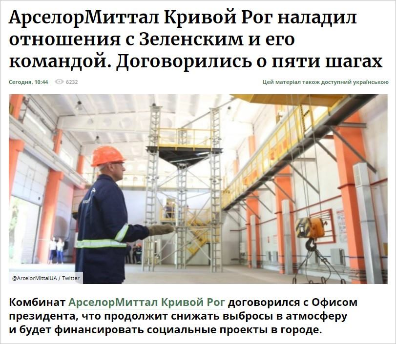
Так і "закінчилася" ера договорняків! Спочатку СБУ "наїжджає" на завод за порушення в екології, а потім внаслідок "переговорів" з ОПУ усі претензії знімаються. Питання: скільки "забашляли"?
В Україні - "день тиші" перед виборами в парламент
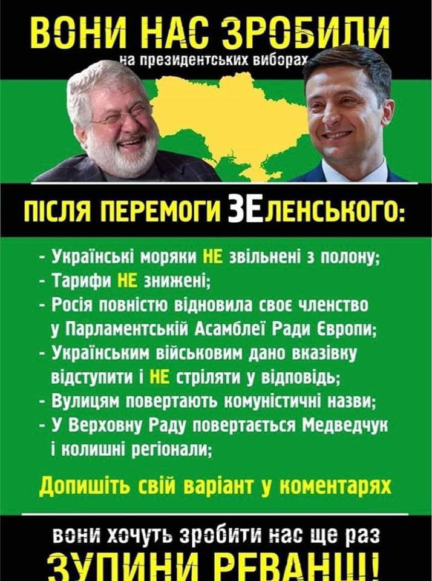
60 дней Зеленского »»»
21.07.2019
"Підіграє Путіну!" Друг Зеленського потрапив у скандал на виборчій дільниці »»»
Дані національного екзит-полу. Партія-фантом без чіткого бачення політичного майбутнього України здобуває перемогу »»»
Антиукраинские Оппоблок и Партия Шария получат финансирование из госбюджета »»»
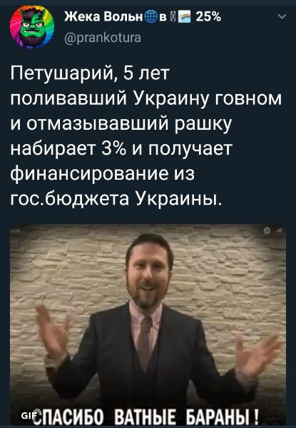
UPD1: Шарій поширює фейки »»»
UPD2: Как Шарий выполнял заказы спецслужб РФ по дискредитации Украины »»»
У Зеленського не виключили підвищення ціни на газ в Україні »»»
А як гарно обіцяли зниження тарифів!
22.07.2019
Результати позачергових парламентських виборів »»»
Найбільше незаконної агітації в день виборів було від імені «Слуги народу» »»»
Так для них закон не писаний, так що зовсім не дивно!
За підсумками підрахунку 50% бюлетенів "Слуга народу" має монокоаліцію у ВР
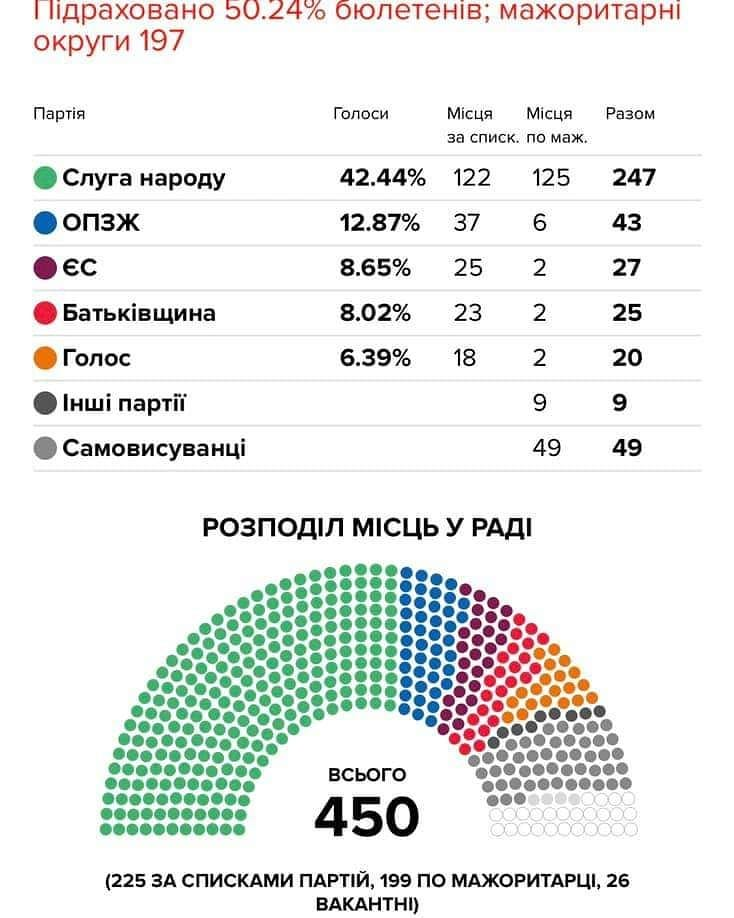
В Україні відбулася УЗУРПАЦІЯ влади! Владу в країні ЗАХОПЛЕНО олігархом Коломойським і його поплічниками!
Ну що, вперед команда Зе! Чекаємо долар по 8 і 4000$ з/п для вчителів!
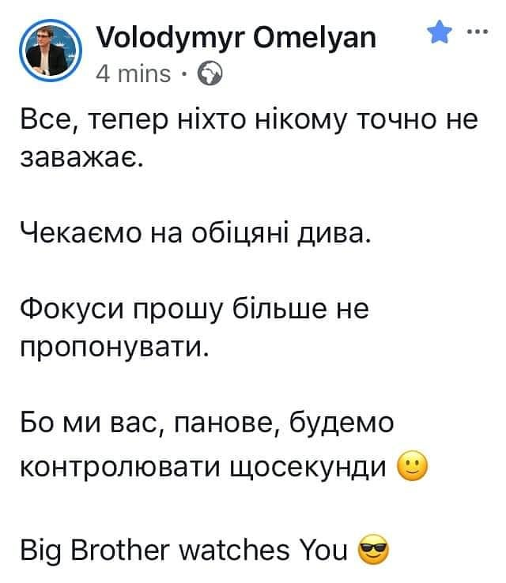
Екс-регіонала Олександра Єфремова, звинуваченого у державній зраді ВІДПУСТИЛИ!!! »»»
UPD: "Да, я спонсор ополчения", - Ефремов дал интервью в ЛНР, перед арестом в Киеве »»»
23.07.2019
Зеленський заборонив рейдерство – новий указ »»»
У Зеленского попытались влезть в казну, но МВФ им кое-что объяснил »»»
Кто проходит в Раду: Поименный список будущих депутатов »»»
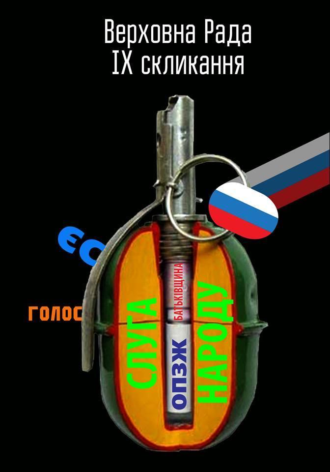
Пусковий ричажок можна утримувати деякий час, але не безкінечно!
Який народ, такі у нього й слуги! У деяких обраних депутатів від "Слуги народу" тільки СЕРЕДНЯ ОСВІТА! Накерують! »»»
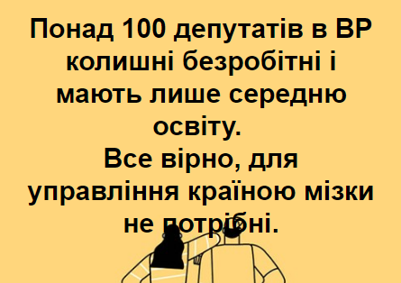
Відсутність освіти у нардепів автоматично означає нерозуміння процесів, що відбуваються в країні і наслідків, до яких можуть призвести ті чи інші положення написаних такими "слугами народу" законів. Т.зв. Верховна Рада перетворюється на збіговисько кнопкодавів, які слухняно голосуватимуть за "потрібні" олігархам і Кремлю Закони й прийматимуть "потрібні" їм Постанови
Дочка продюсера "Ліги сміху" з бізнесом в Криму: в Раду пройшла епатажна кандидатка від "Слуги народу" »»»
А це переможець по 169 округу Олександр Куницький, або просто: автоблогер Саньок!
Так-так, той самий, з подвійним громадянством! »»»
В партії "Слуга народу" не буде людей, які працюють на олігархів - Разумков »»»
"Ліга сміху" продовжується!
Таїсія Повалій їде у Київ з ювілейним концертом »»»
Ще одна проросійська нечисть повертається! Скучили?
Ламати завжди легше! Розпочато демілітаризацію недобудованого ракетного крейсера «Україна» »»»
"Нє стрєлять, так нє стрєлять!" Навіщо ж збройним силам України військово-морський флот?
24.07.2019
Зеленський ввів в РНБО мафіозі і старого друга Путіна »»»
Московська церква тріумфує: апеляційний суд дозволив їй не перейменовуватися »»»
UPD: Московський патріархат знову в українській армії? »»»
Разумков зробив нову заяву щодо російської мови в Україні »»»
Регіональний статус російської мови повертається!
Президент почав аналізувати закон про українську мову »»»
Долю української мови потайки, без створення відповідної фахової комісії визначає той, хто сам української мови НЕ ЗНАЄ і затято її ІГНОРУЄ, неодноразово порушуючи цей самий Закон
Обшуки в Кабміні: прокурори взялися за поставки військового обладнання з США »»»
І як скоро почнуть саджати за отримані Україною "Джавеліни"?
Кабмін отримав листа від Офісу Президента щодо звільнення Кличка з посади голови КМДА »»»
У разі звільнення Кличка з посади голови КМДА уся реальна влада в Києві перейде до призначеної Зеленським особи, а Кличко опиниться в ролі британської королеви, який не матиме, практично, ніяких повноважень. Зеленський повертає назад схему, яка діяла за часів Януковича, коли кияни обирали собі мера, але містом фактично керував ставленик Банкової.
UPD: Депутат пояснила, чому Зеленський, за вказівкою ФСБ, захоплює Київ »»»
З тамади в депутати за тиждень. У Київській школі економіки проведуть ТИЖНЕВИЙ освітній курс для членів фракції "Слуга народу". »»»
Генпрокуратура зупинила слідство проти підозрюваних у вбивстві Катерини Гандзюк »»»
Позивачка до SkyUp в суді намагається заблокувати повернення ліцензії авіаперевізнику »»»
МАУ Коломойського поступово починає "видавлювати" з України лоукостерів
2 тисячі гривень за 23 см: у продажу з'явилися бюсти Зеленського »»»
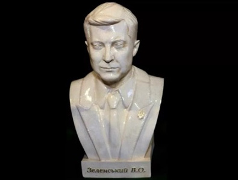
С@ка, здається, це вже діагноз!
І ще один п##дець
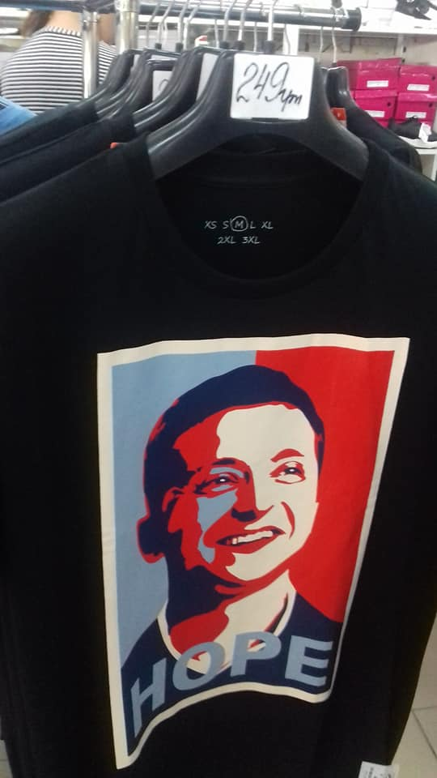
До того ж у біло-синьо-червоних тонах! Знаково!
25.07.2019
Зеленський взяв у свою команду фігуранта "справи Свинарчуків" »»»
А як "мочив" Порошенка! Як "мочив"!..
У Зеленського анонсували підвищення цін на холодну воду »»»
А ви усе на зниження тарифів чекаєте? Тоді ми йдемо до вас...
Зеленський призначив заступником глави Служби зовнішньої розвідки жінку: хто вона »»»
Хто, хто? Та ось хто!
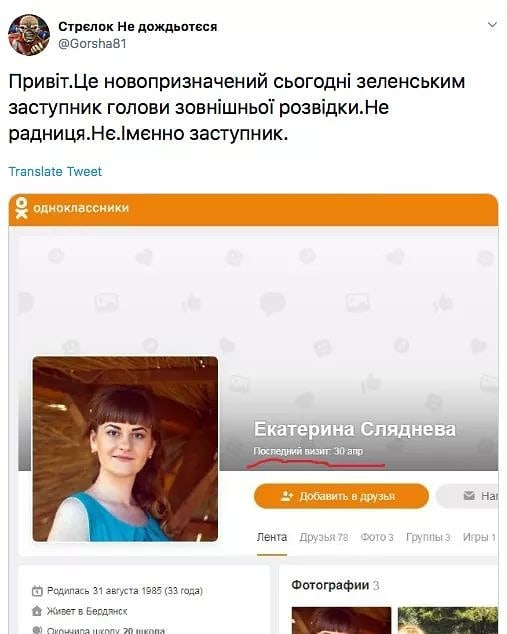
А ще нова заступниця Служби зовнішньої розвідки (!!!) відкрито ігнорує Указ Президента про заборону Однокласніков і ВКонтактє, інтенсивно знайомиться з іноземцями і вважає, що "Комунізм - ето модно!"
На автомобіль Петра Порошенка напали проросійські тітушки »»»
Часи регіоналів повертаються!
UPD: На авто Порошенко вылез россиянин, которому Зеленский дал гражданство Украины »»»
И ось таким неадекватам Зеленський збирається масово видавати паспорти України!
UPD: Білоруська школа КДБ, висока посада у МВС: що відомо про "Боцмана", який підозрюється у нападі на Петра Порошенка »»»
Прем'єр Гройсман і міністр Аваков непублічно відвідували олігарха Пінчука »»»
Команда Володимира Зеленського радісно рапортує, що у Арсена Авакова знайшли автора ролика про Зеленского з вантажівкою і кокаїном, і тепер його посадять на 5 років »»»
5 років за сатиру над Зеленським – це вже перший крок до побудови поліцейської держави
На псевдоконференції з підкупленими учасниками вимагали скасувати мовний закон »»»
В Раду от "Слуги народа" прошла кандидат, заступившаяся за террористов "ДНР" »»»
«Возим уголёк?»: Зеленский «тихо» снял блокаду Донбасса »»»
Держборг України за червень зріс майже на $2 мільярди »»»
"Чувак сказал - чувак забыл": 60 дней президентства Зеленского, как они есть »»»
"Борець з олігархами" інтенсивно з ними спілкується і навіть їздить до них додому. Зеленського впіймали на гарячому
26.07.2019
26 июля в Одессе ожидается приезд президента Украины »»»
Що особливо ріднить нашого приtheдента з російським, так це параноїдальні заходи безпеки при, здавалося б, захмарних рейтингах і всенародній любові
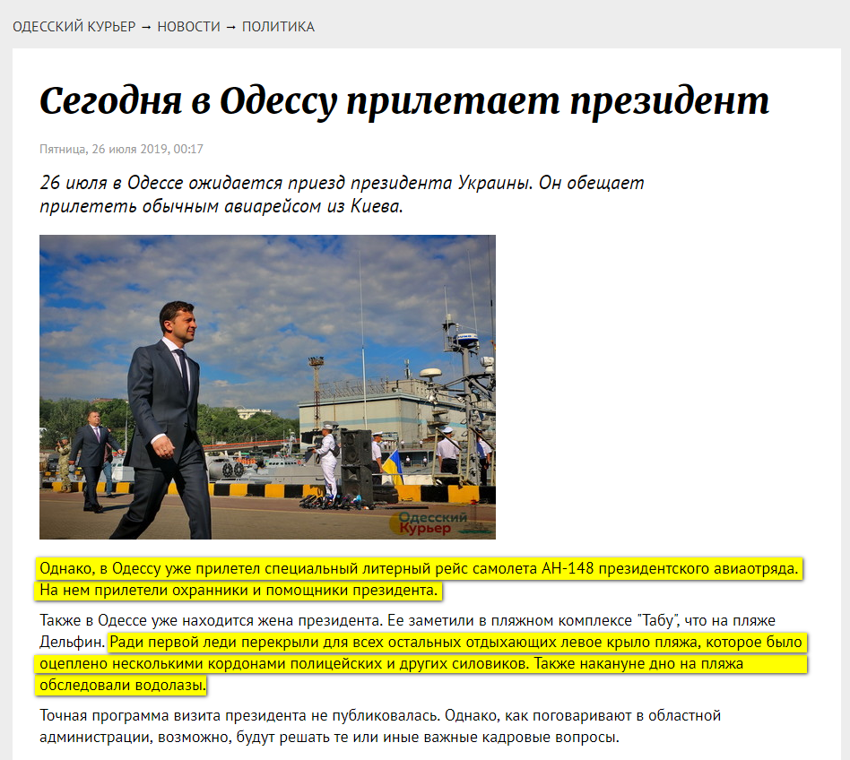
UPD: Зеленський прилетів в Одесу економ-класом »»»
А компанія-то перевізник Зеленського яка? Правильно, МАУ!
UPD: Можна Зеленського вивести з "Ліги сміху", але вивести "Лігу сміху" з Зеленського... Зеленський знову в Одесі. Цього разу знову на "Лізі сміху" »»»
UPD: Зеленський був присутній в Одесі на матчі за Суперкубок України між “Шахтарем” та “Динамо” »»»
UPD: Давайте посмеёмся. Президентская чета решила отдохнуть в Одессе за счёт налогоплательщиков »»»
Ділових зустрічей ЖОДНОЇ! Приtheдент "устал". В програмі перебування шостого президента в Одесі тільки ВІДПОЧИНОК і РОЗВАГИ! За наш з вами рахунок!
UPD: На фестиваль "Кварталу" в Одесі Зеленські літали за свій кошт »»»
На питання про те, скільки коштував переліт Зеленських, охорони та обслуги, в ОПУ не відповіли. Тобто, запитання залишаються...
Держбюджет України пішов в "мінус" »»»
Так хто краде: п'ятий чи, може, шостий?
В РФ заявили о контактах «Слуги народа» с российскими депутатами »»»
UPD: В «Слуге народа» опровергли сообщение о переговорах с депутатами РФ »»»
Кличко заявил, что в Офисе президента ему пытались навязать «смотрящих» »»»
Доллар рекордно упал по отношению к гривне »»»
Вже і вибори скінчилися, а передвиборча кампанія усе ще триває:
UPD: История о Зеленском, который помог крымскотатарскому дедушке, оказалась фейком »»»
Окружний адмінсуд становить загрозу національній безпеці - ГПУ »»»
Нацгвардецы будут патрулировать улицы украинских городов »»»
А що, в Україні введено військовий стан? Чи це визнання "успішної" реформи правоохоонних органів імені Авакова?
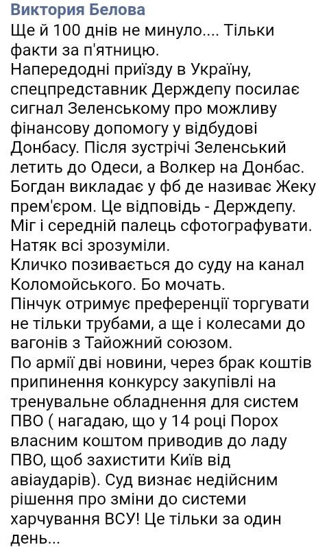
27.07.2019
Зеленський вже розпочав наступ на мовний закон »»»
Суд cкасував перехід ЗСУ на нову систему харчування »»»
UPD: Суд Києва відмовив Міноборони в поновленні дії наказу про перехід війська на нову систему харчування »»»
Стандарти НАТО? А от х#єм вам по роялю!
UPD: Пересісти з "Мерседеса" на "Запорожець": військові прокоментували призупинення реформи харчування в ЗСУ »»»
Порошенко з Волкером обговорюють союз США та України. Зеленський у цей час на "Лізі сміху" цілує лисого. А нагадайте-но, хто у нас зараз президент???
UPD: «Лига Смеха» в Одессе: «бывший» в зале, будущие нардепы и стеб над Порошенко »»»
Усі державні справи уже зроблено! Приtheдент за державний кошт розважається! Але "мальдівський барига" у нас все одно Порошенко! Не плутайте!
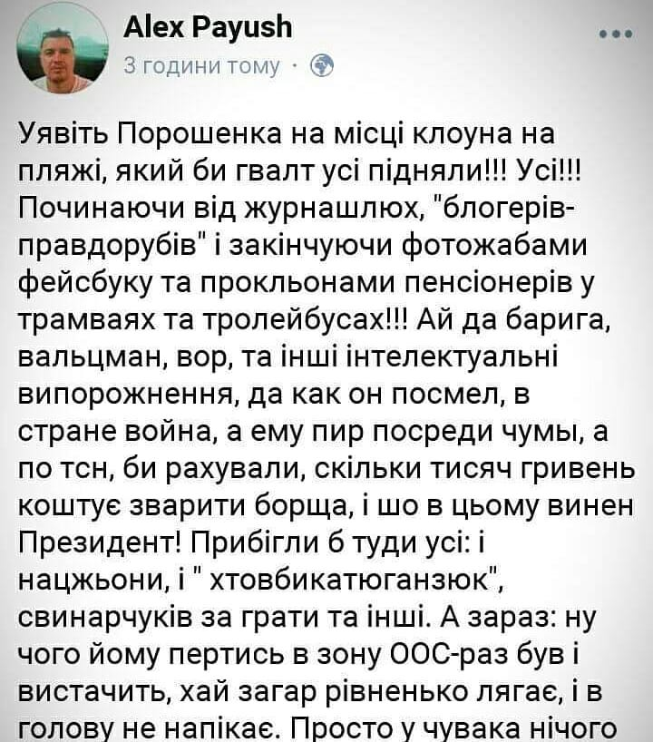
Звичайно, президент має право і повинен відпочивати. Можливо, навіть і за державний кошт. Але як тому ж Порошенку згадували за Мальдіви (одні за 5 років!), а тут за три місяці: Турція і двічі в Одесі... Ось такі вони, подвійні стандарти й подвійна мораль нової зекоманди і їх адептів!
Росіяни захопили ще одне українське судно: 11 моряків у полоні на Кубані »»»
Як там браслетики, Вова? Допомагають?
Уже друга петиція за відставку Богдана через порушення закону про люстрацію набрала необхідну кількість голосів »»»
UPD: В ОПе данную петицию считают шуткой, в ней нет «ничего серьезного »»»
UPD: Зеленський відповів на петицію про звільнення Богдана »»»
Зеленський відповідає, що звільнив Богдана з посади Голови АП. Звісно, звільнив, адже АП перейменовано в Офіс Президента! От Богдан більше й не працює в АП, оскільки немає вже самої АП. Шулери при владі!
28.07.2019
Зеленський привітав українців з Днем хрещення Киівської Руси-України! У Твіттері! »»»
Тепер, щоб дізнатися про якісь важливі події в Україні, до яких приtheдент має стосунок, потрібно перешерстити пів-Інтернету, щоб що-небудь знайти?
А от на жодній з урочистостей, присвяченій цій вікопомній події приtheдент побувати так і не захотів
UPD: Річниця Хрещення Русі. Росія-24 веде з Києва репортаж: “І нє било нікакой нєзалєжной України…” »»»
Кандидаты от "Слуги народа" массово приехали в Трускавец на "учебу" »»»
Розмістились скромно, готель "Ріксос" - мінімальна ціна за ніч 4100 грн. Готель "Женева" - подешевше від 1980 грн з людини. Епоха бідності скінчилась)))
UPD: У “Слузі народу” пояснили, чому навчають майбутніх нардепів в найдорожчому готелі Трускавця »»»
UPD: Обучение "Слуг народа" обойдется в 10 миллионов. Епоха бідності скінчилась »»»
UPD: Тільки на проїзд - 200 тис. грн »»»
UPD: "Х*йкин, говнюк, пи*дил деньги": скандальные фото курортного обучения "слуг народа" »»»
Це усе, що вам потрібно знати про інтелектуальний рівень і рівень культури депутатів від зеленської партії. Наголосували?
UPD: Журналістів не пустили на тренінг для депутатів від «Слуги народу» у Трускавці »»»
UPD: А чи є хоч яка-небудь користь від таких тренінгів? »»»
UPD: Майбутні депутати від «Слуги народу» завершили навчання в Трускавці. На осінь заплановані нові курси »»»
Залишили на "другий рік"?
UPD: Частина «слуг народу» у Трускавці замість вчитися, ходили у SPA »»»
UPD: "Слуги народу" їдуть із Трускавця купейними вагонами »»»
Чотири купейних вагони поліпшеної якості. З кондиціонерами. Кінець епохи бідності вже настав. Знову не для нас!
UPD: “Слуги народу” висадили з потяга звичайних українців заради себе коханих: гримить скандал »»»
UPD: Тренінг із «душком»: у «Слузі народу» відмовились пояснити, хто оплатив розкішне навчання депутатів у Трускавці »»»
UPD: «Слуга народа» отчиталась, сколько денег потратила на обучение нардепов в Трускавце »»»
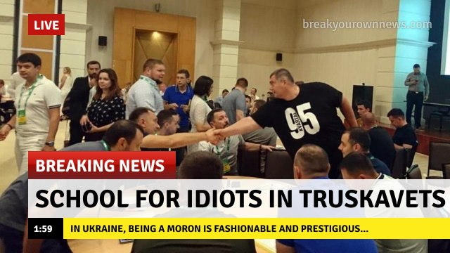
Адміністративна реформа: ще одна реформа, яка давно розпочата, але яку зекоманда піарить, як свою »»»
Зеленський і Богдан:
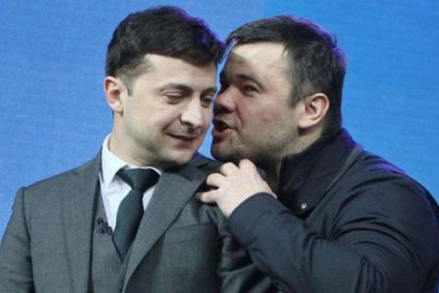
Богдан і Зеленський:
Зеленський з Богданом:
...і, нарешті, Богдан з Зеленським:

Цікаво, а Лєнка свого благовірного до Богдана ще не ревнує?
Зеленський чи Богдан? Хто насправді керує країною? »»»
Судячи з усього, таки Зеленський працює президентом в Офісі Богдана
29.07.2019
“Что ж вы за дебилы?” У Зеленського різко висловилися проти Дня пам’яті і примирення »»»
UPD: Депутат від партії Зеленського пообіцяв “взятися” за Інститут нацпам`яті та В`ятровича »»»
UPD: "Фашисти, бандерівці, поліцаї": людина Зеленського зганьбилася "нацистським" скандалом »»»
Хроніки окупації. У Зеленского планують запустити державний російськомовний канал та скоротити Суспільне »»»
Ось така популяризація української мови від нової влади
UPD: Русифікація України. Що придумала команда Зе? »»»
UPD: Почти годовой бюджет Киева. Расходы на создание русскоязычного телеканала оценили в 2 млрд долларов »»»
UPD: Серіали і ток-шоу - що транслюватимуть на державному російськомовному каналі »»»
95 квартал і "Свати" - це якраз саме те, що треба для закріплення й посилення антиукраїнської пропаганди. Тільки тепер уже антиукраїнські посили на окупований Донбас спрямовуватиме не країна-агресор, а сама Україна, та ще й за державний кошт! Доголосувалися?
UPD: Державний російськомовний телеканал закріпить поділ українців – політолог »»»
UPD: Українізація Донбасу чи «донбасизація» України? »»»
Партія “Слуга народу” не буде вносити законопроект про повне зняття депутатської недоторканості »»»
І всі обіцянки, і всі гнівні вимоги до Парламенту - просто розводка для лохів!
Узеленские заявили что не могут снизить тарифы: "Это сложно" »»»
А лох - ето судьба!
Андрей Богдан покинет Офис президента ради кресла в Высшем совете правосудия »»»
Ну що, тепер УСІ суди в Україні будуть підконтрольні Коломойському!
UPD: Богдан прокомментировал заявление о своем увольнении »»»
UPD: Президент підтвердив, що керівник його Офісу написав заяву на звільнення »»»
Отже, маємо вже 30-те порушення законодавства пизидентом. Сам визнав! Вписування дати в чужу заяву кваліфікується по ст. 358 КК - підробка документів з відповідальністю – позбавлення волі до 5 років. Також можна кваліфікувати це як використання завідомо підробленої заяви на звільнення що згідно статті 366 КК є службовим підробленням, що також карається позбавленням волі на 5 років.
UPD: В Офісі президента не знаходять заяви про “відставку команди” »»»
Отже, Зеленський знову збрехав!
UPD: Фейк державного масштабу: Андрій Богдан залишається керувати Офісом президента »»»
UPD: Відставка Богдана: що це було – тролінг або політтехнологія »»»
Отже, хлопчики на державних посадах просто знову пожартували. Хлопчикам просто весело! Дбл блд!
С момента инаугурации Зеленского в Украине ничего не изменилось в лучшую сторону »»»
30.07.2019
Голова КМДА повинен скласти свої повноваження перед новообраним Президентом – Андрій Богдан »»»
UPD: Кличко → Богдану: “Не ганьбіться! Коли такі речі говорить керівник Офісу Президента – це виглядає, як мінімум, дивно і некомпетентно.” »»»
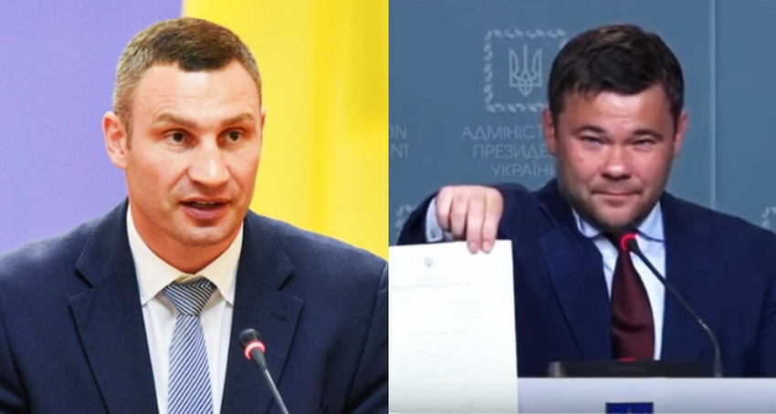
UPD: "Богдан фактично заявив про власний злочин": Чорновіл пояснив, як керівник ОПУ "зманіпулював рішенням КСУ" »»»
UPD: Виталий Кличко обратился в НАБУ по поводу заявлений Богдана о взятке в 20 миллионов долларов »»»
UPD: НАБУ открыло дело о взятке в $20 млн »»»
Замість параду проведемо ходу гідності, - Богдан »»»
Ось так узеленські вирішили, як примазатися до ходи ветеранів АТО!
UPD: Офіс Президента зганяє бюджетників та перекриває Хрещатик концертом для зриву Маршу Захисників України »»»
UPD: ОПУ Зеленського зганяє бюджетників з регіонів на Хрещатик 24 серпня (Документ) »»»
UPD: Місце в кінці колони: прихильники Порошенка відповіли Зеленському щодо параду »»»
"Дєточка, а вам нє кажется, что ваше мєсто возлє... - ну і далі за текстом
UPD: Стала відома причина, через яку це зелене чмо відмінило парад… »»»
UPD: Парад пройдет! Без Зеленского. Защитники Украины не видят возможности идти рядом с теми, «кто устал от войны» в так называемом «Шествии Достоинства» »»»
UPD: Кліпмейкер Бадоєв та хореографка Коляденко стали режисерами «Ходи гідності» до Дня незалежності »»»
Бадоєв - друг і фінансовий партнер Зеленського. Тобто, членограй дає своєму корешеві заробити з бюджету. Оті самі 300 мільйонів, які коштує парад і які "планувалось роздати" військовим! І це ні разу не корупція!
UPD: ГЕЙ Зеленского проведет ЛГБТ ВОЕННЫЙ ПАРАД В КИЕВЕ
UPD: Пост Арестовича про парад рвe мeрежі »»»
UPD: Парад по-модному. Как из Дня независимости Украины делают клип Ани Лорак »»»
ДБР розслідує 11 справ, де фігурує Порошенко — Труба »»»
Щодо однієї такої справи - про бронежилети, - то Труба уже зізнавався у тому, що сфабрикував її »»»
UPD: Портнов не надав жодного доказу в своїх заявах до ДБР - Порошенко »»»
В Україні закрили реєстр корупціонерів: 24 тис. хабарників можуть повернутися на посади »»»
У Зеленського планують приватизацію держбанків »»»
Досвід з "Приватбанком" узеленських нічому не навчив. Хоча, як спосіб повернути "Приват" Коломойському - геніальна ідея! Схоже, таки на Україну очікує тотальний переділ власності
UPD: Виведені гроші з Приватбанку знайшли на рахунках 95 кварталу »»»
Безпрецедентний наступ на свободу слова в Україні. Печерський суд заблокував десятки УКРАЇНСЬКИХ сайтів »»»
Рішення приймав той самий одіозний суддя Вовк С.В.
UPD: Люта справа (за что заблочили Энигму?) »»»
Разумков запевнив, що переходити на українську мову – неправильно »»»
Зеленський продовжує свої "гастролі" регіонами країни і задовольняє запит своїх виборців на хамство й плебейство »»»
А свої авто продати слабО?
І про план керування "неофітами" від СН
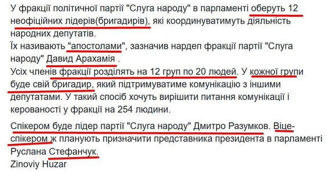
Дев'яностими не повіяло?
Підсумки 100 днів після виборів приЗЕдента:
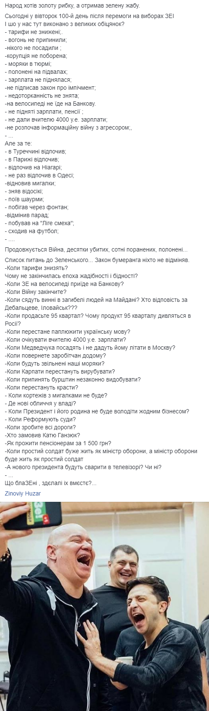
31.07.2019
ЦВК визнала обраним нардепом від Слуги народу громадянина іншої країни »»»
Що? Закони? Та POHUY!
Зеленський призначив нового голову Черкаської ОДА »»»
Новий голова Черкаської ОДА має активи в РФ, у 2017 році купив в росії квартиру і земельну ділянку, веде активний бізнес в країні-агресорі. А "бізнес на крові" - то усе Порошенко. Не переплутайте!
За 72 дні перебування на посаді преЗЕдента Зеленський порушив закони України 29 разів »»»
Анатомія реваншу в Україні »»»
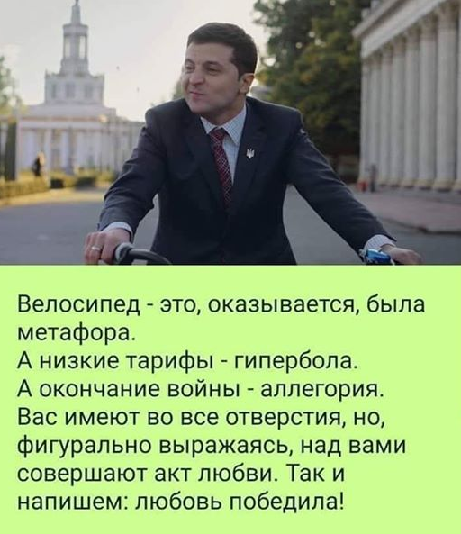